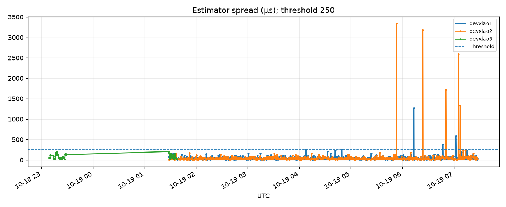
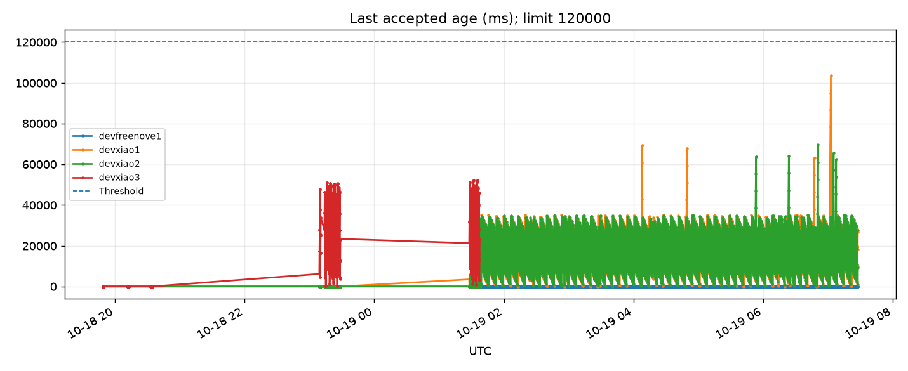
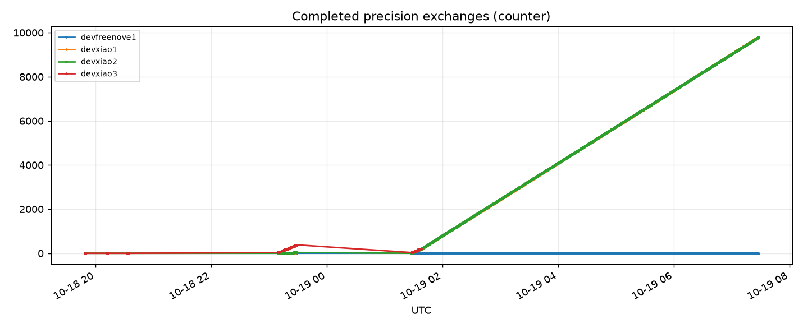
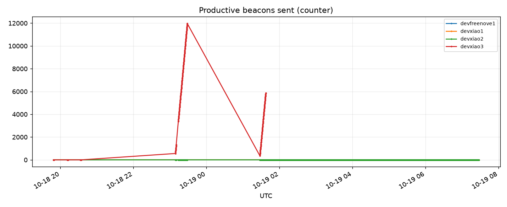
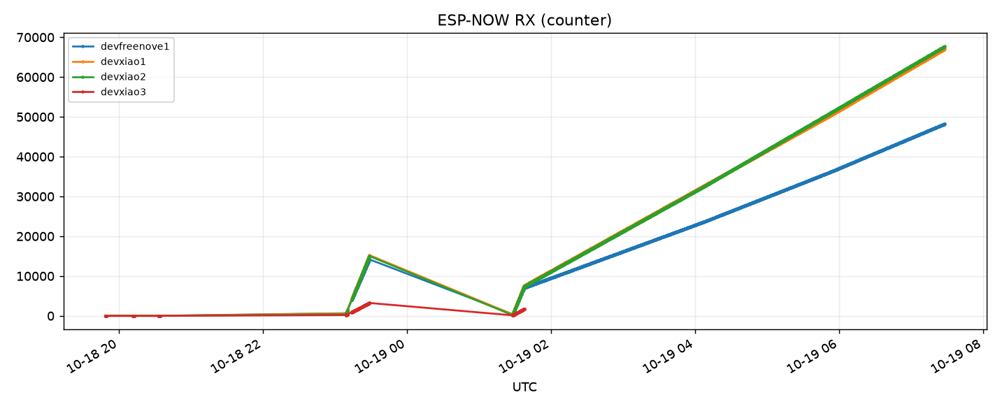

Important: Estimator spread does not prove real GPIO synchronisation accuracy. No physical GPIO comparison is performed.
| Host | Mode | Role | Availability | Spread | Exchanges | Beacon TX | Lease |
|---|---|---|---|---|---|---|---|
| devfreenove1 | normal | coordinator | 100% | n/a | 0 | 0 | False |
| devxiao1 | normal | node | 100% | 32.0 µs | 9792 | 0 | False |
| devxiao2 | normal | node | 100% | 30.0 µs | 9792 | 0 | False |
| devxiao3 | time_broadcaster | node | 15% | 13.0 µs | 208 | 5863 | True |
| devxiao3.local | None | None | 0% | n/a | None | None | None |
devxiao3: HTTP availability below 80%; devxiao3.local: HTTP availability below 80%




